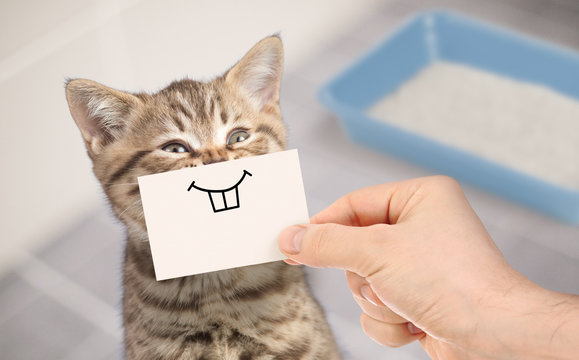

What should I feed my cat?

Cats should have a diet similar to that of their wild relatives. They are adapted by nature to be flesh
eaters, as is shown by their alimentary tract and their dentition. The cat uses its canines to catch and
kill prey, the molars to cut it up. Lack of flat-surfaced teeth prevents it from chewing or gnawing. The cat
has a short intestine, and its stomach secretes digestive juices that act primarily on meat. Cats, however,
like all meat-eating animals, ingest grass and other plants occasionally, and small quantities of vegetables
may serve as both a laxative and a hair ball remover.
Although your cat needs certain amounts of each specific nutrient to be healthy, more is not always better. This
is particularly true of vitamins and minerals, so the use of supplements is usually not necessary if you are
feeding a balanced and complete diet. Supplements can be harmful to your cat, and they should never be given
without a veterinarian’s approval. Cats should have access to clean, fresh water at all times.
ats can be choosy about where they eat. Keep in mind that heavy-traffic areas, noise, the presence of other
animals, dirty food containers, or nearby litter boxes can deter a cat from eating. Try to be sensitive to your
cat’s eating behavior, and make necessary adjustments.
Fun Fact

Although many people believe that milk is good for cats, the reality is that it's a myth. Unfortunately, milk
is not the healthiest beverage for felines. In fact, it can cause a series of ailments, including an upset
stomach, cramps, and severe diarrhea. A large majority of cats are lactose intolerant and/or become
dehydrated when they are fed cow's milk.